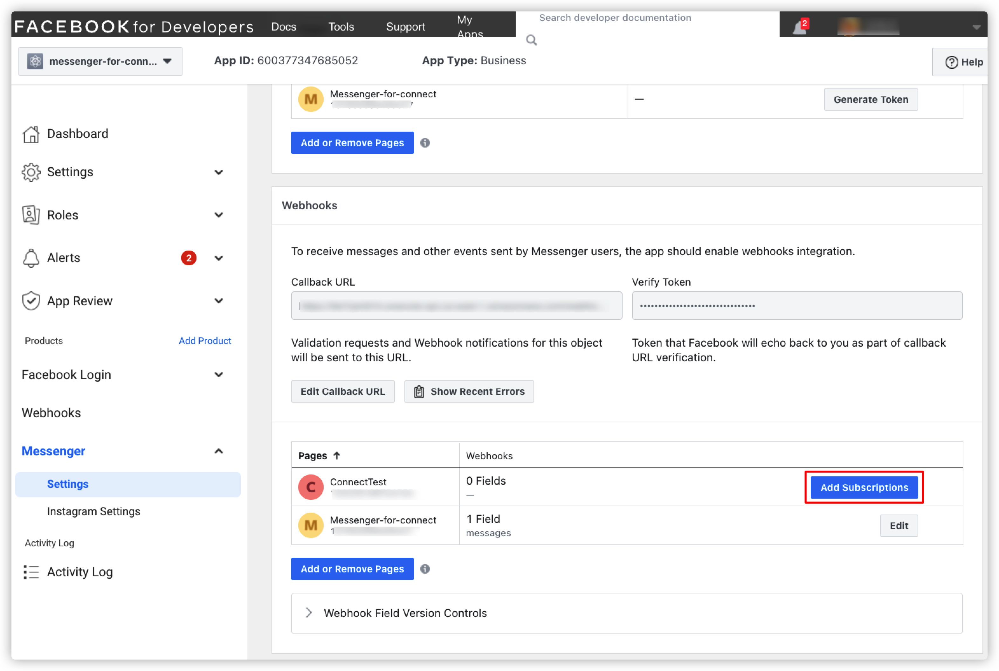

11. Facebook Messenger Chat 결합 2
이번 장에서는 AWS CDK 서비스를 이용하여 인프라 및 관련 코드를 Deploy 해보겠습니다.
AWS CDK 설치
- 이미 CDK 를 Install 하신 분들은 다음 항목으로 넘어갑니다. CDK Install 을 위헤서는 AWS CLI 도 미리 설치되어 있어야합니다. AWS CLI 는 다음 링크를 참고하시기 바랍니다. Getting started with the AWS CLI
npm -g install typescript
npm -g install aws-cdk
cdk bootstrap aws://ACCOUNT_ID/AWS_REGION
프로젝트 배포
-
아래의 정보들이 미리 준비되어야합니다. 이전 장을 진행하면서 모두 기록해둔 정보입니다. 다시 한번 정리하시기 바랍니다.
- Amazon Connect Instance ARN
- ex) arn:aws:connect:us-east-1:111111111111:instance/3c01b303-4353-4619-c236-8e9989414a56
- Amazon Connect Contact flow ID
- ex) 3c01b303-4353-4619-c236-8e9989414a56
- AWS Secert Manager ARN
- ex) arn:aws:secretsmanager:ap-northeast-1:111111111111:secret:VoicemailSecret-HiKLP-VH3umh
-
Git 을 이용하여 아래와 같이 message streaming api repository 를 복제합니다.
git clone git@github.com:amazon-connect/amazon-connect-message-streaming-examples.git
- 아래의 디렉토리로 이동합니다.
cd amazon-connect-message-streaming-examples
- 아래와 같이 dependency module 들을 설치합니다.
npm install
cd src/lambda/inboundMessageHandler
npm install
cd ../../..
cd src/lambda/outboundMessageHandler
npm install
cd ../../..
cd src/lambda/digitalChannelHealthCheck
npm install
cd ../../..
- 아래와 같이 CDK 프로젝트를 배포합니다. 위 1번에서 정리한 정보들을 잘 입력하여 실행합니다.
cdk deploy \
--context fbSecretArn=[AWS Secert Manager ARN] \
--context amazonConnectArn=[Amazon Connect Instance ARN] \
--context contactFlowId=[Amazon Connect Contact flow ID]
- 프로젝트가 모두 배포되기까지 수 분 정도 소요됩니다. 배포가 완료되고 나면 FacebookApiGatewayWebhook 정보를 기록해둡니다.
Facebook Callback URL 설정
- Meta(Facebook) for Developers사이트 Meta for Developers
로 이동합니다.
- 이전 장에서 만든 앱을 클릭합니다.
- Messenger, Settings 메뉴로 이동합니다.
- Webhooks 밑의 Callback URL 부분에 FacebookApiGatewayWebhook URL 을 입력합니다. Verify Token 으로는, 이전 장AWS Secret Manager 설정
에서 설정한 VERIFY_TOKEN 값을 입력합니다.
- Add Subscriptions 버튼을 클릭합니다.

- messages 항목을 선택합니다.
- Save 버튼을 클릭합니다.
Chat 테스트
- 8장에서 완성했던 CCP 를 접속합니다. 또는, Amazon Connect Console 에 접속해서 아래와 같이 오른쪽 상단의 아이콘을 클릭하여 기본 CCP를 접속하셔도 됩니다.
- CCP 에서 왼쪽 상단의 상담원 상태를 Available 로 변경합니다.
- Facebook 에 접속합니다. 아래 화면과 같이 Messenger 아이콘을 클릭하고, 이전에 만들었던 앱을 클릭합니다.
- 아래와 같이 채팅창에서 테스트 메시지를 보내봅니다. CCP에서 Accpet 를 하면 채팅을 시작할 수 있습니다.